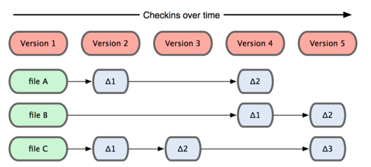

Una breve historia de Git
Como muchas de las grandes cosas en esta vida, Git comenzó con un poco de destrucción creativa y bastante polémica. El núcleo de Linux es un proyecto de software de código abierto con un alcance bastante grande. Durante la mayor parte del mantenimiento del núcleo de Linux (1991-2002), los cambios en el software se pasaron en forma de parches y archivos. En 2002, el proyecto del núcleo de Linux empezó a usar un DVCS propietario llamado BitKeeper.
En 2005, la relación entre la comunidad que desarrollaba el núcleo de Linux y la compañía que desarrollaba BitKeeper se vino abajo, y la herramienta dejó de ser gratuita. Esto impulsó a la comunidad de desarrollo de Linux (y en particular a Linus Torvalds, el creador de Linux) a desarrollar su propia herramienta basada en algunas de las lecciones que aprendieron durante el uso de BitKeeper. Algunos de los objetivos del nuevo sistema fueron los siguientes:
- Velocidad
- Diseño sencillo
- Fuerte apoyo al desarrollo no lineal (miles de ramas paralelas)
- Completamente distribuido
- Capaz de manejar grandes proyectos como el núcleo de Linux de manera eficiente (velocidad y tamaño de los datos)
Desde su nacimiento en 2005, Git ha evolucionado y madurado para ser fácil de usar y aún así conservar estas cualidades iniciales. Es tremendamente rápido, muy eficiente con grandes proyectos, y tiene un increíble sistema de ramas (branching) para desarrollo no lineal
Entonces, ¿qué es Git en pocas palabras? Es muy importante asimilar esta sección, porque si entiendes lo que es Git y los fundamentos de cómo funciona, probablemente te sea mucho más fácil usar Git de manera eficaz. A medida que aprendas Git, intenta olvidar todo lo que puedas saber sobre otros VCSs, como Subversion y Perforce; hacerlo te ayudará a evitar confusiones sutiles a la hora de utilizar la herramienta. Git almacena y modela la información de forma muy diferente a esos otros sistemas, a pesar de que su interfaz sea bastante similar; comprender esas diferencias ayudará a evitar que te confundas a la hora de usarlo.
La principal diferencia entre Git y cualquier otro VCS (Subversion y compañía incluidos) es cómo Git modela sus datos. Conceptualmente, la mayoría de los demás sistemas almacenan la información como una lista de cambios en los archivos. Estos sistemas (CVS, Subversion, Perforce, Bazaar, etc.) modelan la información que almacenan como un conjunto de archivos y las modificaciones hechas sobre cada uno de ellos a lo largo del tiempo, como ilustra la Figura

Git no modela ni almacena sus datos de este modo. En cambio, Git modela sus datos más como un conjunto de instantáneas de un mini sistema de archivos. Cada vez que confirmas un cambio, o guardas el estado de tu proyecto en Git, él básicamente hace una foto del aspecto de todos tus archivos en ese momento, y guarda una referencia a esa instantánea. Para ser eficiente, si los archivos no se han modificado, Git no almacena el archivo de nuevo — sólo un enlace al archivo anterior idéntico que ya tiene almacenado